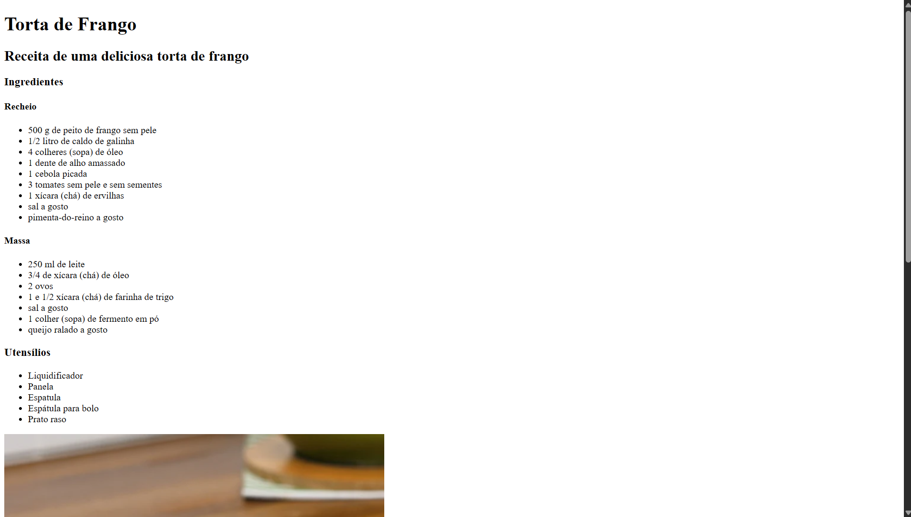
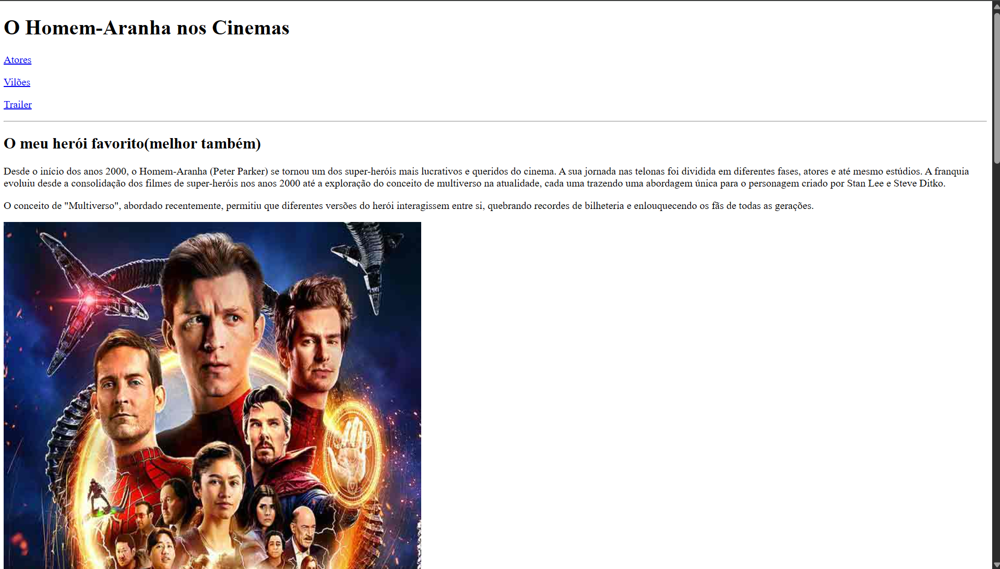
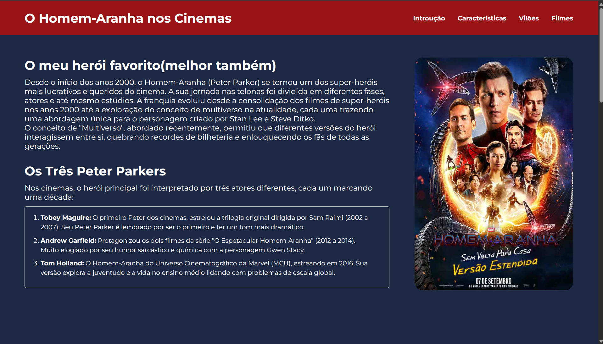

Receita de Torta de Frango
Site de receita que eu irei desenvolver durante as aulas de Desenvolvimento Web, com o objetivo de aprimorar o site com os conteúdos aprendidos a cada aula que se passa.
Ver DetalhesProfessora: Renata Porto Gransoti
Aqui estão alguns trabalhos realizados nas aulas de Desenvolvimento Web: Introdução ao HTML, CSS e Javascript

Site de receita que eu irei desenvolver durante as aulas de Desenvolvimento Web, com o objetivo de aprimorar o site com os conteúdos aprendidos a cada aula que se passa.
Ver Detalhes
Atividade 1 - Criação de Página HTML. O site resume a trajetória do Homem-Aranha nos cinemas, contando sobre os três Homens-Aranha. A página destaca as características, filmes, vilões..
Ver Detalhes
Atividade 2 - CSS: Estilizando uma página WEB. Utilizando o site feito na atividade passada, estilizei a página com CSS e também adicionei outra página. falando sobre os primeiros filmes de cada Homem-Aranha.
Ver Detalhes